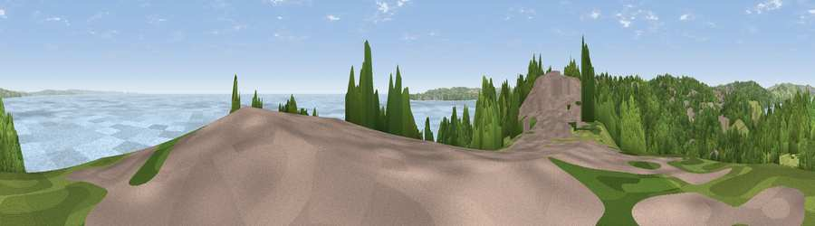

Viewpoint near Torquay
#5251 in England · top 12% of its area beats it · near TorquayThe view, rendered

A 360° render of this exact spot computed from the terrain model, tree cover and land cover — summer colours, afternoon light, calibrated against photographs of famous viewpoints. Real trees, hedges and buildings will differ in detail.
The panorama
Grey silhouette: terrain skyline in each direction (720 bearings, Earth curvature and refraction included). Dashed green: skyline with trees (+15 m) and buildings (+8 m) as obstacles. Blue strip: how far the ground is visible on each bearing.
Where the view opens
Wedge length = distance to the farthest visible ground on that bearing (vegetation-aware). Rings at 10, 25 and 50 km.
What fills the view
55% water · 31% woodland · 7% grassland · 6% built-up
Angular shares of the visible panorama (visual magnitude), not map area. Landscape diversity 0.47 (0–1 Shannon).
Key numbers
More beautiful places nearby
The staircase of upgrades: each row has a higher view potential than everything closer. Driving times are estimates from straight-line distance, calibrated against real road routing — check an actual route before setting out.
| Place | Direction | Drive | Score |
|---|---|---|---|
| Warberry Hill | WNW · 2 km | ~5 min | 71.9 |
| Great Hill | NW · 5 km | ~11 min | 79.7 |
| Viewpoint near Stokeinteignhead | NNW · 6 km | ~13 min | 84.1 |
| High Peak | NE · 27 km | ~44 min | 85.3 |
| Golden Cap | ENE · 54 km | ~76 min | 88.7 |
| The Knoll | ENE · 64 km | ~87 min | 91.0 |
50.46344, -3.49217 · source: screening · position refined by local search. Computed location — check access rights before visiting.